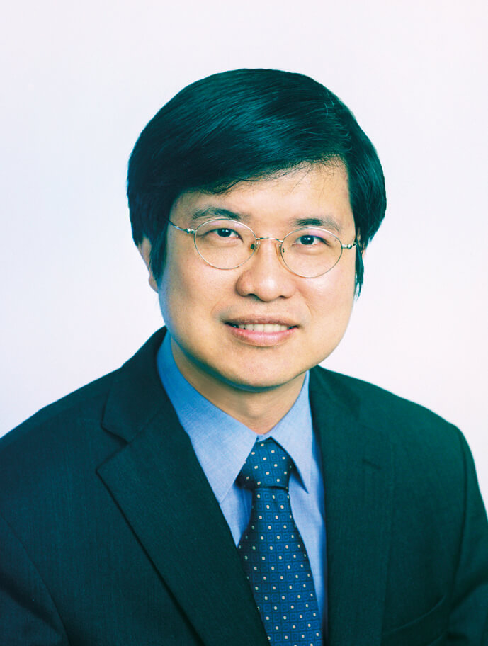

01
FEATURED TOPIC
Power Delivery Network
電源傳輸網路分析、模擬與最佳化
以線性代數為基礎：把電源網路各節點的電壓當成未知數，根據電路定律建立 Ax=b 形式的大型稀疏線性方程組，求出電壓分布並分析 IR-drop。團隊研究稀疏求解、AMG 與平行運算，讓大型晶片的電源分析更有效率。
NATIONAL TAIWAN UNIVERSITY · EE
SoC VLSI-EDA Laboratory
從演算法到晶片實體設計，
探索更高效、更可靠的 IC 設計方法。
ABOUT THE LAB
研究電腦輔助設計，打造下一代積體電路的設計方法與工具。
超大型積體電路系統晶片暨電腦輔助設計實驗室（SoC VLSI-EDA Laboratory）隸屬於國立臺灣大學電機工程學系暨電子工程學研究所，位於臺大博理館 405 室，由陳中平教授主持。
團隊研究涵蓋電子設計自動化、積體電路實體設計與最佳化、電路模擬、電源完整性、熱分析，以及高效能低功耗數位電路與微處理機設計。面對先進製程與大型晶片的挑戰，我們結合數值演算法、平行運算與設計自動化，讓分析更快速、設計更有效率。
探索研究方向LAB MOTTO · 實驗室箴言
老師畫餅 學生充飢
RESEARCH AREAS
研究涵蓋電源網路、晶片熱分析與智慧化設計，
以演算法回應晶片設計的真實挑戰。
FEATURED TOPIC
電源傳輸網路分析、模擬與最佳化
以線性代數為基礎：把電源網路各節點的電壓當成未知數，根據電路定律建立 Ax=b 形式的大型稀疏線性方程組，求出電壓分布並分析 IR-drop。團隊研究稀疏求解、AMG 與平行運算，讓大型晶片的電源分析更有效率。
研究主題
晶片熱分析與熱完整性
團隊以 EDA 模擬分析晶片溫度分布與熱點，探討功耗、電源與熱效應之間的交互影響，協助評估熱風險並支援溫度感知設計。
Physical Synthesis、Placement、Routing 與實體設計最佳化，涵蓋早期 PDN 規劃與 Power Integrity-aware Design。
分析晶片層級訊號完整性、電源雜訊與 IR Drop 等問題。
大規模線性與非線性電路模擬、稀疏矩陣數值演算法、互連建模及統計時序分析。
以機器學習與 AI Agent 協助設計空間探索、實體設計最佳化與智慧化 PDN 參數調校。
高速數位電路、低功耗電路、高速 Dynamic Logic，以及微處理機電路與系統設計。
延續教授過去在類比電路領域的研究經驗，涵蓋電路架構、特性分析與模擬驗證。
CAREER PATHS · 職涯發展
實驗室研究與訓練可銜接半導體、IC 設計及 EDA 產業，畢業後可朝台積電、聯發科、瑞昱、聯詠、新思科技（Synopsys）、Cadence 等一線公司發展。
CAREER DESTINATIONS · 職涯方向
過去也有實驗室成員前往 Intel 等國際科技公司發展。
對 EDA 領域或 IC 設計有興趣？歡迎來實驗室聊聊，認識研究主題與團隊生活。
為了維持研究水準，本實驗室的標準較高、訓練也相對精實。如果您準備好投入大量心力，我們非常歡迎；若您期望較輕鬆的實驗室生活，請務必三思。謝謝您！

PRINCIPAL INVESTIGATOR
CHUNG-PING CHEN, Ph.D.
陳中平教授畢業於交通大學資訊工程學系，並取得美國德州大學奧斯汀分校電腦科學碩士與博士學位。曾任 Intel Strategic CAD Labs Senior CAD Engineer，之後於威斯康辛大學麥迪遜分校任教，並於 2003 年加入國立臺灣大學。
陳教授長期投入 VLSI 電腦輔助設計研究，涵蓋奈米積體電路實體合成、統計時序分析、線路與電路模擬、互連最佳化、光學微影製程模擬，以及 Signal / Power / Thermal Integrity Analysis。團隊研究成果持續發表於 DAC、ICCAD、DATE、ISPD 與 ASP-DAC 等國際會議。
SELECTED RECOGNITION
TEACHER IN MOTION
收藏老師充滿活力的舞蹈片段。
TEACHER’S WORDS
陳中平教授以「人生路的最佳化」分享求學、研究與職涯的體會。
演講摘要 · 92 年 9 月 18 日
陳中平教授｜臺大電機之友「學術漫談」系列
「我們無法控制時事變化與環境改變，但我們可以擁有一顆開闊與無限學習的心，以應付人生路上的各種變化。」
陳老師在大學時唸的是資工，出國唸的是電機；在美國期間曾在 IBM 工作過，也曾在威斯康辛教過書；目前是電子所 ICS 組的教授。多樣化的體驗使他講起人生際遇格外令人感受深刻。以下是陳老師給學生們各方面的建議。
在求學方面，陳老師認為要在興趣與學業間取得平衡，並避免單面向的學習。台大的學生在國內已是天之驕子，但是人外有人、天外有天，要隨時保持謙虛與不斷上進學習的心。在求學路上，同學間除了在學業上的競爭以外，更要懂得互助合作，學會 team work 的技巧，這在工作上是很重要的。
在感情方面，陳老師認為愛是兩人一同成長；他鼓勵學生們多交些朋友，不要因為感情受挫而想不開。對於很多學生在意的出國求學這方面，陳老師認為出國最重要的是磨練語文能力並訓練獨立生活；尤其在國外人生地不熟，在陌生的環境中成長通常有助於培養一個人未來獨立生活的能力。
陳老師認為研究像是一種枯坐冥想，指導教授能教給學生最重要的是正確的做事態度。在就業方面，陳老師建議學生了解自己的興趣與性向，能對自己的工作發生興趣、產生熱忱最為重要。業界和學術界的差異，在於學校中強調較多的理論，而業界較重視實務與理論的結合。最後陳老師勉勵大家，人生路上有我們可以掌握與不可掌握的東西。我們無法控制時事變化與環境改變，但我們可以擁有一顆開闊與無限學習的心，以應付人生路上的各種變化。
PUBLICATIONS
依臺大電機系公開著作列表整理，按期刊與會議論文分類。
來源頁目前列出的論文年份為 1999–2005；最新資料請以臺大電機系官方列表為準。
OUR PEOPLE
LAB LIFE
記錄研究室的活動、交流與日常。
FEATURED VIDEO
記錄實驗室成員參與電子所羽球競賽的活動片段。
活動照片即將更新，敬請期待。
WEBMASTERS
網站內容與更新由實驗室管理員維護。
GET IN TOUCH